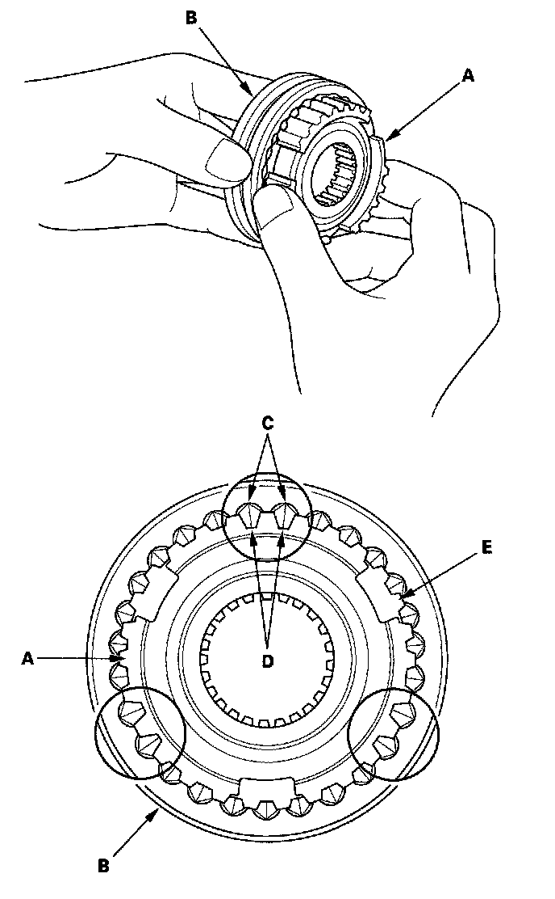

Synchro Sleeve and Hub Inspection and Reassembly
Synchro Sleeve and Hub Inspection and Reassembly1. Inspect gear teeth on all synchro hubs and synchro sleeves for rounded off corners, which indicate wear.
2. Install each synchro hub (A) in its mating synchro sleeve (B), and check for free movement. Make sure to match the three sets of longer teeth (C) (120° apart) on the synchro sleeve with the three sets of deeper grooves (D) in the synchro hub.
NOTE:
^ Do not install the synchro sleeve with its longer teeth in the synchro hub slots (E) because it will damage the spring ring.
^ If replacement is required, always replace the synchro sleeve and synchro hub as a set.
